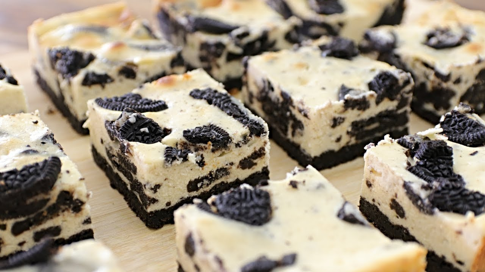

Oreo Cheesecake Bars

A delicious dessert!
These oreo cheesecake bars are simply irresistible for everyone loving cookies and cream.
They are surprisingly easy to make and are the perfect treat for lots of people.
Ingredients:
- Oreos
- Butter
- Cream cheese
- Sugar
- Sour cream
- Eggs
- Vanilla
- Salt
Step by step:
- Pulse the cookies in a food processor. Pulse again with butter.
- Press the mixture into a prepared pan and bake until set.
- Make the filling, pour the batter onto the crust, and sprinkle with cookie crumbs.
- Bake until the filling is set, cool, and chill.
- Cut the Oreo cheesecake bars into squares.